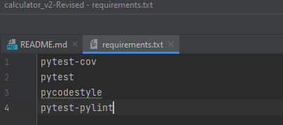
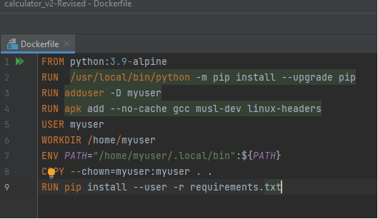
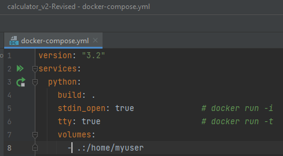
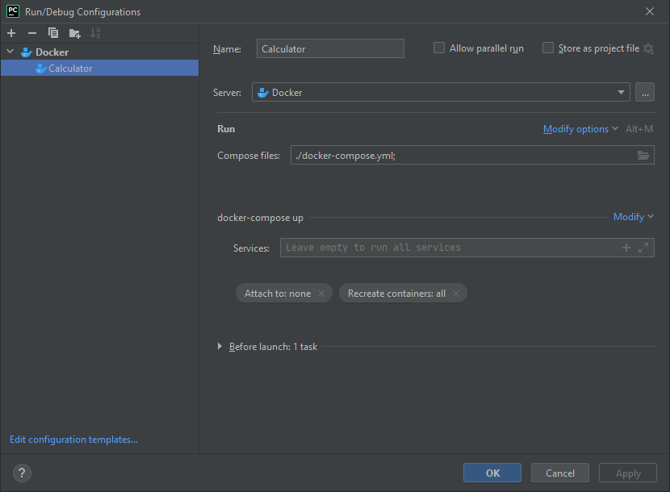
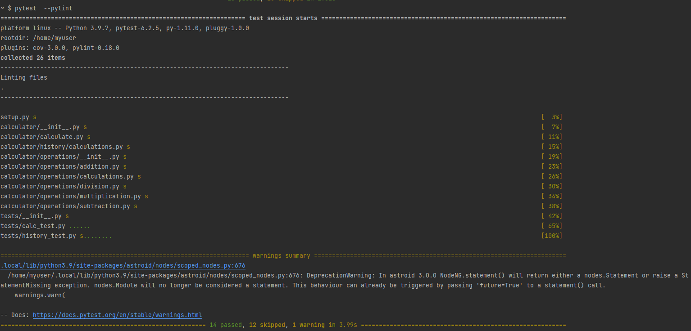

What is Pylint?
Pylint is a tool that checks for any errors in your Python code. Pylint will tell you which line the error is on and what type of error it is. If your project has multiple Python files, Pylint will indicate which file failed.
How to configure pylint?
This is only valid projects using docker
The Steps Are As Followed
- In pycharm, right-click the project directory and create a file call requirements.txt.
- Double left-click that file to open it and insert these lines of text:
- pytest
- pycodestyle
- pytest-pylint

You can add pytest-cov if you want to test coverage as well, but that's for another time.
- Now let's reference our Docker Tutorial and create a Dockerfile. Right-click the directory and create a new file called Dockerfile.
- With the file made, insert the following code:
- FROM python:3.9-alpine
- RUN /usr/local/bin/python -m pip install --upgrade pip
- RUN adduser -D myuser
- RUN apk add --no-cache gcc musl-dev linux-headers
- USER myuser
- WORKDIR /home/myuser
- ENV PATH="/home/myuser/.local/bin":${PATH}
- COPY --chown=myuser:myuser . .
- RUN pip install --user -r requirements.txt

- Right-click the directory again and create a file calleddocker-compose.yml and enter the following:
- version: "3.2"
- services:
- python:
- build: .
- stdin_open: true # docker run -i
- tty: true # docker run -t
- volumes:
- - .:/home/myuser

- Now we need to configure Docker to be our interpreter for Python. To do this, click the "Add Configuration" towards the top of Pycharm and click the + to create a configuration.
- Select Docker-compose and name the configuration. Click the folder button to select your docker-compose.yml file. Click modify containers and select recreate containers and then all. The configuration should like this if done correctly.

- On the bottom right, make sure configuration is there and click the on the "run" button at the top. Open the service tab at the bottom, and you should see docker running.
- Click on the arrow next to the container and click the arrow next to python. Right-click the object and create a terminal
- Run pip install --user -r requirements.txt in the terminal to make sure everything is installed. Then run pytest --pylint and the result will tell you if you had any errors, warnings, or if it passed. In my case, I had everything pass with one warning.
